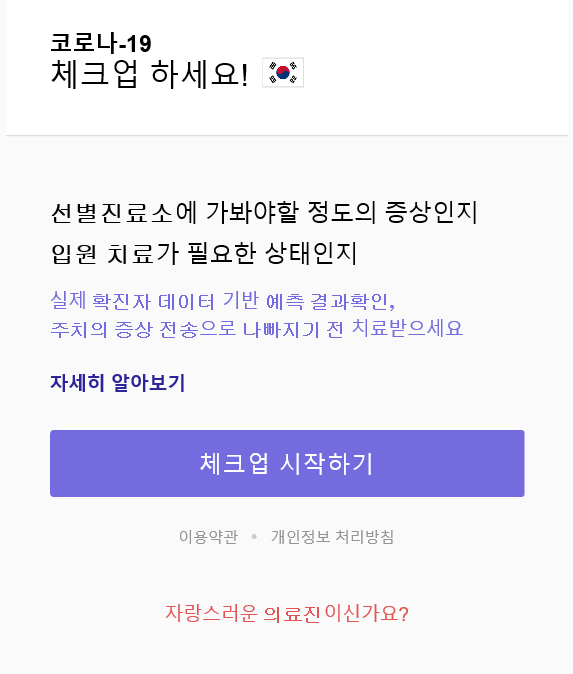

편리하게, 빠르게! 코로나 19 자가진단 앱
국군의무사령부가 자체 개발한 신종 코로나바이러스 감염증 관련 앱은 사용자가 입력한 기본정보, 증상, 병력 등을 바탕으로 환자의 중증도를 제시해주는 자가진단 앱이다.
환자의 상태가 나쁠 경우 선별진료소 등을 방문해 코로나 19 정밀 검사를 받으라고 권고한다.
이 앱의 개발자는 국군의무사령부의 의무사 소속 허준녕 대위로 환자 선별의 필요성을 느껴 계획하게 되었다고 한다.
연세대학교 의료원의 도움으로 지난 4월 10일 개발이 완료된 ‘코로나 19 체크업’ 앱은 코로나 19 확진자 300명의 데이터를 활용하여 인공지능 분석 모델과 통계학적 모델을 만들어 빅데이터를 구축했다.
환자가 입력한 정보와 증상은 데이터로 수집돼 의료진에게 전달되기 때문에, 의료진은 비대면으로 등록된 환자의 상태를 확인하고 관리할 수 있다는 장점이 있으며 사용자는 앱을 활용해 간단히 자신의 증상을 객관적으로 확인하고, 막연한 불안감을 해소할 수 있다는 장점이 있다.
현재 국군수도병원에서는 이 앱을 활용하고 있으며 신촌 세브란스병원에서도 활용을 검토 중이라고 한다. 또한, 세계보건기구(WHO)는 지난 1일 “한국에서 개발한 코로나 19 진단 앱은 전 세계적으로 코로나 19 대응에 도움이 될 것”이라고 언급했다.
코로나 19 체크업 앱은 인터넷 주소창에 DOCL.org를 입력하면 쉽게 접속할 수 있다.
코로나19 체크업 앱 바로가기 (https://docl.org/#/)

HOVID-19 천혜랑 기자 (holston31015@covid.19)